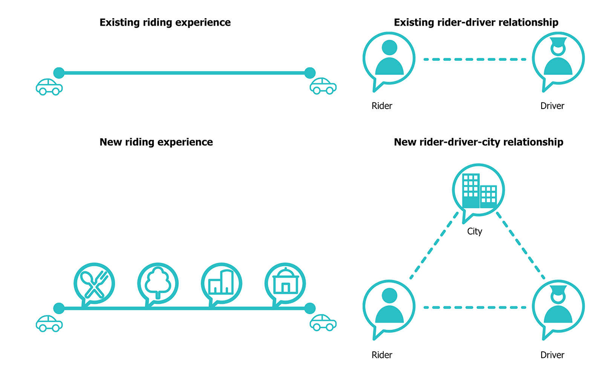
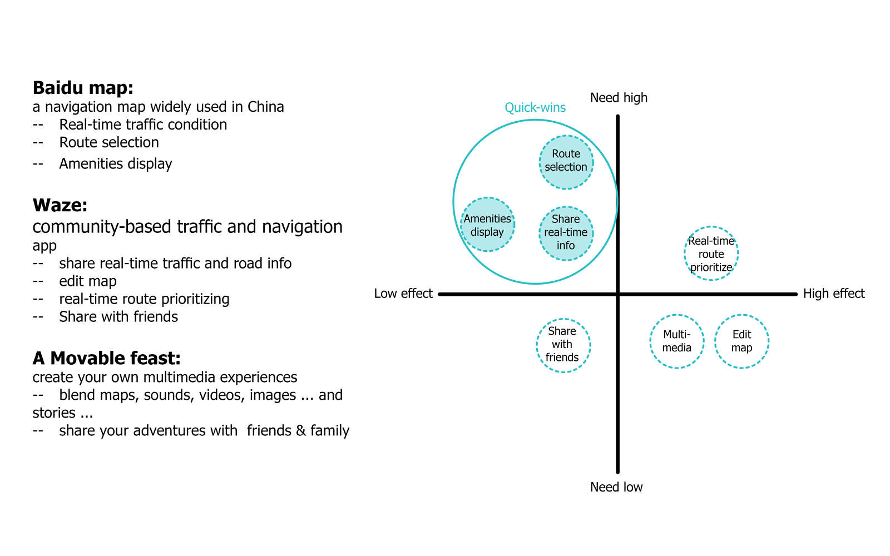
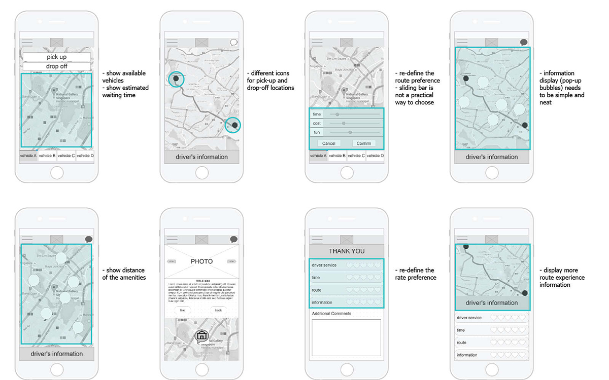

Re-define the feature for car-hailing application to enhance riding experience in the city: an application could facilitate people to learn more about the city they visit or live, a transportation app that users can “talk” with the city.
2016
UI/UX
talkie transportation app design
Through analysing many of the existing transportation apps, I found most of them only focus on the interactions between rider and driver, while the interaction with the “city”, the context where the journey is taken has been neglected.
How if the application could facilitate people to learn more about the city they visit or live through riding experience? A transportation app that you can “talk” with the city?

First, informal talking with friends to learn their experience with any transportation apps in Singapore:
1— Frequency using Car-hailing app, comparing with using other public transportations
2— Experience before ride, in the ride and after ride
Second, identifying different types of users based on their length of stay in Singapore and creating personas with in-depth interview.
Identify the successful features of other apps that could meet riders' expectations.
Use Axure to quickly generate B&W interface prototypes for user testing and receiving design feedback.
